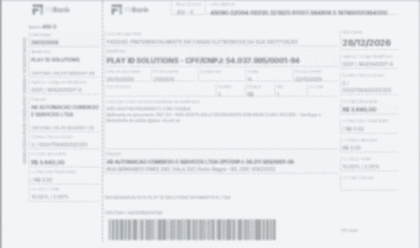

| Informação de segurança para clientes PLAY-ID. |
|
Confira algumas dicas para evitar cair no golpe do boleto falso! |
|
Olá, Cliente!
O golpe do boleto falso é uma fraude que pode atingir tanto pessoas físicas quanto empresas. Por isso, a PLAY-ID preparou orientações para ajudar você a identificar possíveis adulterações antes de realizar um pagamento.
Nesse tipo de golpe, criminosos podem modificar a linha digitável, o código de barras ou os dados do beneficiário. Em alguns casos, o documento mantém uma aparência legítima, dificultando a identificação da fraude.
|
Saiba como se proteger:

Imagem ilustrativa. Os dados do documento foram intencionalmente desfocados.
1. Confira o beneficiário. Antes de confirmar o pagamento, verifique se o nome e os dados apresentados pelo banco correspondem aos dados oficiais da empresa que deve receber o valor.
2. Verifique a linha digitável e o código de barras. Uma adulteração pode direcionar o valor para outra conta. Confira as informações exibidas pelo banco antes de autorizar.
3. Desconfie de cobranças inesperadas. Se receber uma segunda via não solicitada ou uma cobrança com alterações, confirme a autenticidade pelos canais oficiais da empresa.
|
|
|
E não esqueça: um boleto pode apresentar logotipo e aparência profissional e ainda assim ser falso. Se identificar divergências, não efetue o pagamento antes de confirmar os dados.
Caso já tenha pago um boleto suspeito, contate imediatamente sua instituição financeira, comunique a empresa envolvida e registre a ocorrência.
|
|
Selo Evolis Certified Repair Center
| |
Ficou com alguma dúvida? Fale com a PLAY-ID pelos canais oficiais. |
Segurança também começa com informação. Conte com a PLAY-ID! |
www.play-id.com.br
Facebook | Instagram | LinkedIn
Informativo de prevenção a fraudes da PLAY-ID. Em caso de dúvidas sobre cobranças, utilize nossos canais oficiais.
Antes de enviar campanhas, inclua os dados cadastrais e a opção de descadastramento, quando aplicável.
|